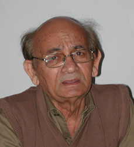

| TASADDUQ SOHAIL is a Pakistani fiction writer and a highly regarded painter who lives in London where he migrated in 1961. Tariq Ali, the well-known activist and author of The Clash of Fundamentalisms, made a documentary on his life and art which was televised in England. Tasadduq Sohail has regularly held exhibitions of his paintings in England, Pakistan and India and is also the author of a collection of short stories, Tanhaa'i kaa Safar. |
|  |
PHOTO BY M.U. MEMON (JAN. 2006) |